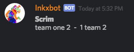
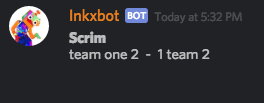
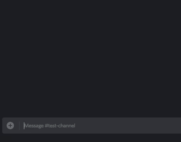

Reading Brackets and Info From Challonge

Store all your challonge tournament info with Inkxbot!
You can even see the current tournament bracket with the
,bracket command!
Log Your Team Battle Scores
 
Every time you have a battle, you have the feeling to log it.
With this simple
,post command you can log the scores!
Splatoon Compatibility Aproved!
Forgot the Callouts on a certain stage on Splatoon 2? Don't worry!
Inkxbot has all the callouts of the stages in it's code! Just use
,callouts list to pump out the list of callouts!Callouts for new stages get added 3-5 days after a new stage gets added.